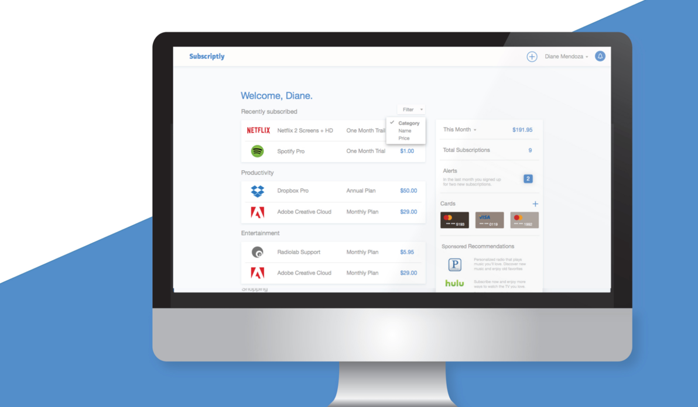
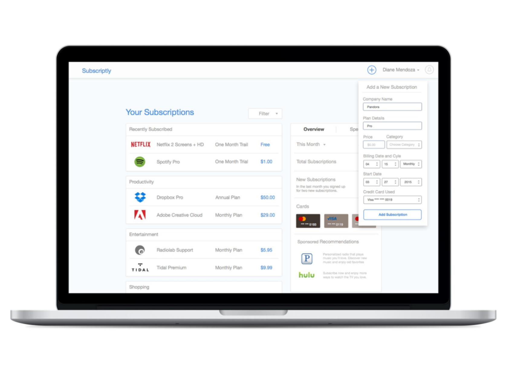
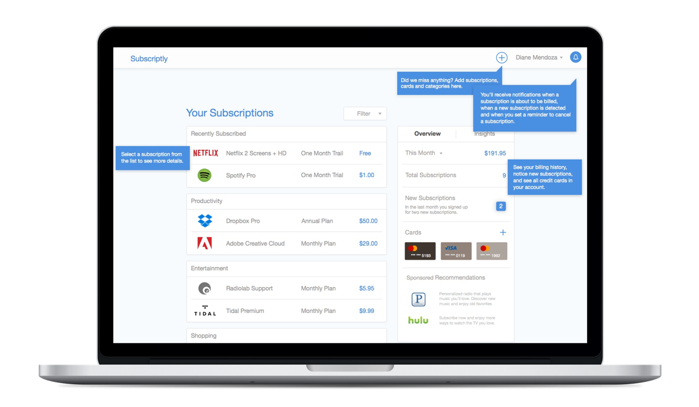
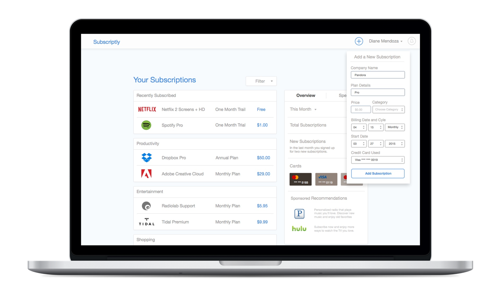

INTRODUCTION
Subscriptly is a web app designed to help people track and manage their subscriptions in one place.
Our app's goals are simple: Show users what subscriptions they have. Help users stay alert to billing dates, expiring services, and renewals. Help users make informed financial decisions by giving them a clear view of detailed and overall spending.

VIEW INTERACTIVE PROTOTYPE
Why? The subscription model is trending with new services and many businesses are changing their business models to adapt. As more services use the subscription model, it becomes more difficult for customers to manage and keep track of their subscriptions from their regular credit card statements.
Audience Some people have too many subscriptions to count, and some just have a handful that they use on a regular basis. So we asked people: What are all of the services that you use? How many times have you forgotten to cancel free trials before getting charged? And, how do you decide which services to keep?
Domain Personal Finance
Interactive System A web app that will keep track and visualize all the information of user subscription services.
Problem People are subscribing to multiple services in different channels, which causes friction in the way they visualize and manage the services.
PROJECT DETAILS

After user signs up and provides their banking information, Subscriptly automatically scans their bank history to detect existing subscriptions, user can review them to add or delete any subscriptions to proceed.

When user first arrives at the interface they will get a tour explaining what each section is for and how they can performs desired actions.

User can manually add a subscription at any time by simply filling a short form on the main interface.